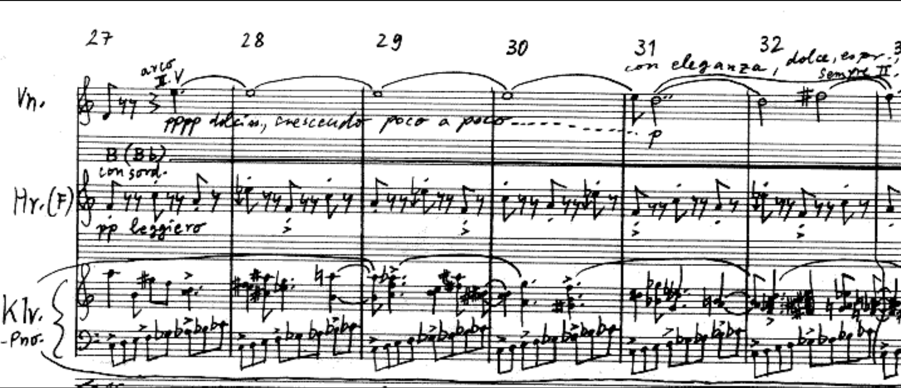
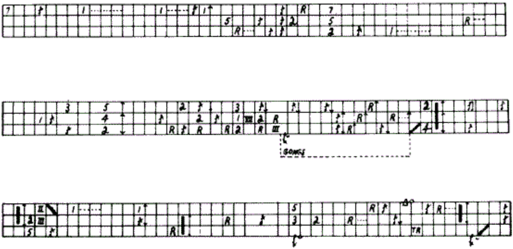
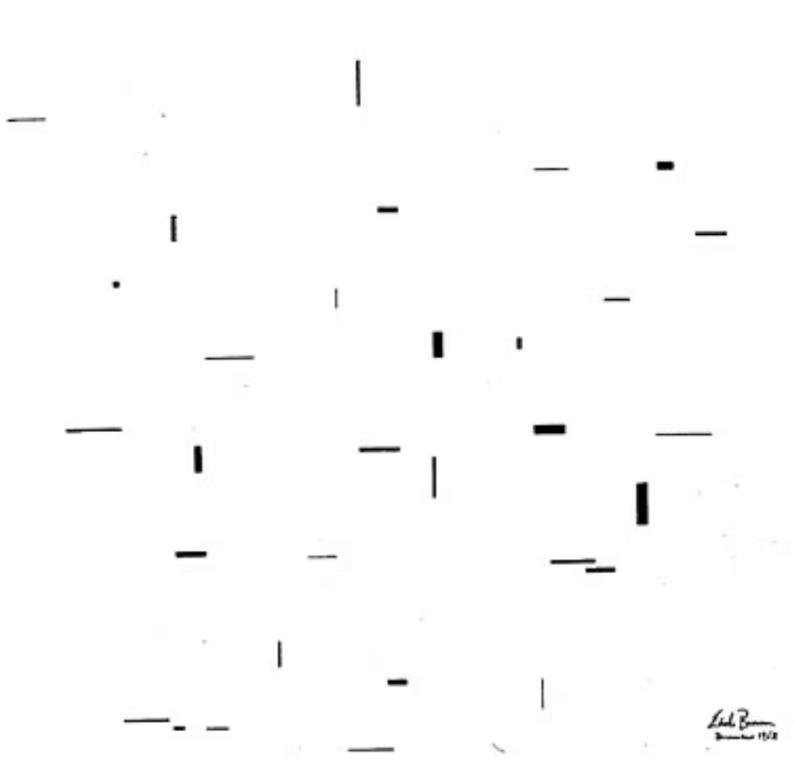
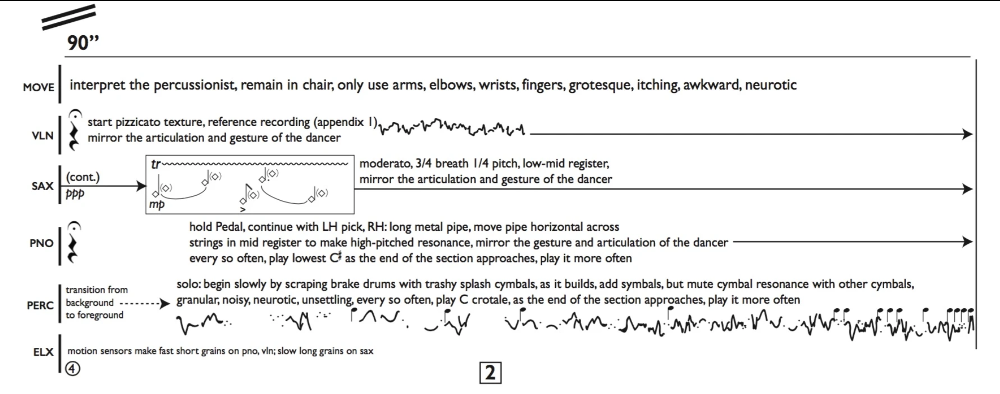
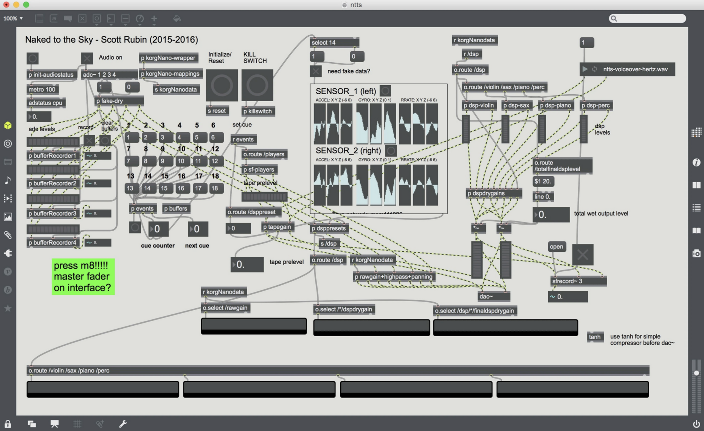

In 2015, I received a delightful email from Cheryl Duvall of Toronto’s Thin Edge New Music Collective. They were planning a collaboration with Rebecca Leonard’s contemporary circus company A Girl in the Sky Productions and choreographer Manu Cyr, and they asked me if I’d be interested in creating a piece with them scored for mixed quartet and circus performer. I said yes, and eventually we created Naked to the Sky. Usually when people propose projects to me, the gears in my head start spinning uncontrollably. However in this instance, my mind was blank for about 4 or 5 months. I couldn't navigate the logistics of integrating a circus performer with a chamber ensemble in a compelling way. Every time I thought about the project, Ringling Brothers came into my head…
Let’s talk about notation for a moment.
Most composers I know struggle a great deal with notation. The very act of writing down sound is bizarre. Converting a physical action to 2D graphic representation is absurd. It’s no wonder there’s no widespread codified dance notation.
Most approaches to notation can be described on a spectrum with two main approaches: prescriptive and descriptive. Basically, are you telling a performer what action to take, or are you describing what the result of the action will be. These approaches are not mutually exclusive, though traditional western classical notation is usually descriptive. We read notes and rhythms on a page and move our bodies to produce them. While using traditional western classical notation, composers usually don’t write in trombone slide positions or how much bow to use while playing violin. This is usually implied.

Anybody want to name that tune ^^^ ?
Graphic notation (what we tend to call notation that isn't traditional or text-based) is a strange bird. It can be prescriptive or descriptive (or both) depending on the composer’s intentions. Some come with instructions (Feldman’s King of Denmark)

while others don’t (Brown’s December 1952).

So, back to the project -- If the goal is to create a performance that integrates musicians and non-musical performers, you’d need a notation that unites both parties. I wanted the piece to include sections where the musicians actively interpret the circus artist and change their playing depending on his movements. This meant that the notation needed to be flexible, allowing the circus artist freedom to fully commit to the expressivity of the moment, and allowing the musicians integrate his movement in into their performance. I’ve copied a section of the score below.

This section lasts 90 seconds and features a percussion solo. In the solo, I asked Nathan (the percussionist) to use specific objects to produce music that carries a particular character. I asked Louis (the circus artist) to interpret the percussionist with a few restraints. For the other three musicians, they are given a few techniques, but I’ve excluded any fixed rhythmic schemes or specific pitches. Instead, they’re simply asked to “mirror the articulation and gesture of the dancer”. Thus, the percussionist provides his own accompaniment through two layers of interpretation:
-
The circus artist interprets the percussionist (sound --> movement)
The other three musicians interpret the circus artist (movement --> sound)
We first piloted this experiment at the Avaloch Farm New Music Initiative, with yours truly faking (terribly) the part of the mover (clip for pedagogical purposes only).
This was the first time I attempted an experiment like this, and I found results to be very compelling. The movements and the musicians' sounds became embedded in each other. The ensemble acted as a responsive extension of the mover’s body. Here’s Louis’s performance in Toronto this past November at our production, Balancing on the Edge:
I guess I should speak about the live electronics.
Along with creating an analogue connection between Louis and the musicians, we established a digital connection through the use of wireless motion sensors (2 iPods courtesy of the UC Berkeley Dance Department) strapped to Louis’s forearms using medical bandages. These sensors streamed gyroscope, acceleration, and magnetometer data in OSC packets over a wifi network to a MaxMSP patch on my computer in real time. Forgive my messy patching...

The large box in the middle labeled SENSOR_1 takes in and monitors the motion sensor data stream. In the patch, these numbers are scaled and mapped to control digital signal processing parameters that manipulate the sound of the live instruments. For instance, the orientation of the sensor on the x-axis might control the center frequency of a band-pass filter in the violin's signal chain. Usually, I map the rate of rotation (degrees per second) on the x-axis to the level of the instrument's processed sound. This means that whenever Louis would twist his forearms, we'd hear sound corresponding to the quickness of the twist. This metric was very easy for him to control, and the sounds responded fairly reliably to his movements. Of course, doing the opposite mapping (loud electronic sounds being wiped away by silence triggered by quick movements) would also be interesting... Anyways, these mappings change throughout the piece, thus creating a dynamic relationship between Louis's movements and the electronic sound.
Here's a clip of me testing the patch using pre-recorded acoustic samples at the Center for New Music and Audio Technologies (clip for pedagogical purposes only).
Thus, we've created analogue and digital connections between the movement and the sound. Louis's movement affect how the players approach their instruments through a human-human interaction, and they affect how the live acoustic sounds are sampled, processed, and played back through a human-computer-interaction. The specific rules of these relationships fluctuate as the piece progresses and are controlled by presets in the maxpatch. Sometimes the performers' roles are embedded with each other, and at other times they ignore each other. Sometimes the musicians' parts are represented with squiggles and text, and sometimes they are notated traditionally.
I should add that I was fortunate enough to have the American premiere of Naked to the Sky this past December at the University of California, Berkeley, featuring dancer SanSan Kwan and the Eco Ensemble.
Having another team (in another venue) interpret the work was an enlightening experience. My initial premonition was that it'd be difficult to train another ensemble of musicians to respond to a dancer, but this wasn't the case. In fact this processes is pretty intuitive. Many musicians trained in classical or jazz idioms have experience following a conductor, so following a dancer just takes a more little creativity on the musician's part. Perhaps it was more difficult to "train" the dancer to act as an initiating agent. Most dancers whom I've worked with have never danced this sort of role, but after a few sessions of judgement-free improvisation and a little bit of feedback from myself and the musicians, they grow comfortable with it.
I'd like to give a HUGE thanks Cheryl, Rebecca, Ilana, Nathan, Chelsea, Louis, Manu, SanSan, Loren, Josh, Hrabba, and Myra for bringing this project to life.